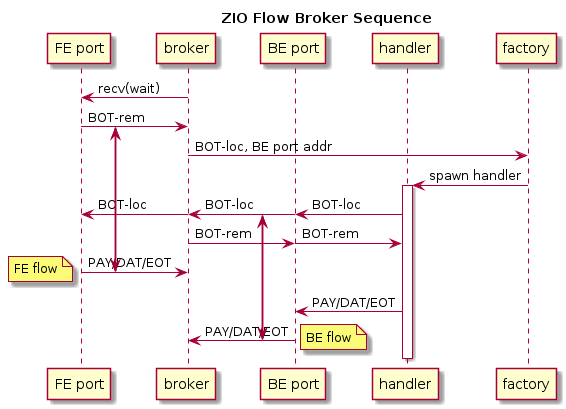

Flow Broker
Table of Contents
The simple flow server described in flow will break if more than one
client attempts to enter the conversation. That document also
describes how to use multiple zio::flow::Flow instances to handle
per-client transmissions. The application is of course free to define
the handling mechanism and this document describes one possible
solution which is here called a flow broker.
1 Architecture
The flow broker associates a remote client with a local client handler. The association is via the routing ID number which is carried by any message received from a SERVER socket held by the broker. Likewise, for a message to be delivered to a client it must have had a routing ID set on it by the broker applications.
The broker thus can not associate these two clients until each try to send to each other. But, they can not send to each other until the broker associates them. This catch-22 is broken in the flow broker's flow initiation protocol which is a small extension to the basic flow protocol and is not exposed to remote clients.
The flow initiation (FI) protocol is illustrated in the following UML sequence diagram.

In the diagram the object named client is the remote client, the port represents the broker ZIO port with a SERVER socket. The FI protocol is inserted between the reception of the BOT message from the remote client (BOT-rem) and its reply (*BOT-loc) from the local client handler and proceeds through this sequence:
- broker receives BOT-rem and stores the ZeroMQ routing ID of that
message into a
cidattribute of the ZIO message flow object (prefix header label attribute) and reverses the value of the flowdirectionattribute producing the BOT-loc message. It then calls the factory on this message. - factory dispatches the message in an application-dependent manner. Shown here, a handler is spawned. Other dispatching patterns are allowed, but the subsequent behavior of the handler illustrates what is required those patterns by the FI protocol.
- handler sends to port the BOT-loc message, typically as-is but may
make changes if the application level protocol requires it however
it must keep the
cidflow object attribute intact. - On receipt of any message with a
cidattribute the broker records the routing ID of that message and thecidin that message in a bidirectional association. - The broker strips the
cid, forwards BOT-loc to the remote client, reverses itsdirectionattribute and sends it to the local client handler thus completing the flow protocol BOT handling for both clients. - Subsequent flow messages from either remote client or local client handler can now be routed to its partner.
- Any EOT flow message observed by the broker will result in removal of the corresponding entry in the bidirectional association. Any non-BOT messages with a routing ID not present in this association are dropped.
2 Addressing
The creation of the broker SERVER port is outside the scope of the FI protocol extension. That is, the application must arrange for the port to be online prior to broker operation and any factory and handlers must know how to form attachment (be it connect or bind) between their sockets and that of the port. It is not required, but this attachment mechanism may be simplified by requiring the port socket to bind and any clients to connect.
3 Broker Complexity
The complexity of the broker appears somewhat high while one might say it does not actually "do" anything. However, the broker is absorbing complexity that may otherwise have to be expressed elsewhere. This section outlines what this means.
3.1 Broker as mirror
The broker and its given factor provides a mirror that allows remote clients and local client handlers to be implemented with a high degree of symmetry. A class providing the remote client may be used as-is in a local client handler depending on the design of the application-provided factory. That is, if both client and handler are designed to take their initial BOT they may be implemented identically.
3.2 Handler simplicity
Because a handler may be implemented in terms of a client it may use
the zio::flow::Flow C++ API (see flow) or zio.flow.Flow object in
Python. Without the extra SERVER socket and its added complexity a
new protocol would need to be invented to implement client handlers.
3.3 Centralization
Brokers are naturally centralizing. This can be advantageous or problematic. Without a broker, a developer may instead create one simple flow server (as described in flow) for each remote client to converse. The software operator must then know to configure and execute one such simple client per each remote. ZIO peering can help ameliorate bringing together these pairs, but any execute-on-demand pattern would need to be invented by the developer. The factory provides that pattern here.
The centralization also helps when the resource managed is shared between the local client handlers. For example, if multiple handlers write to a common file some mechanism is likely required to assure this writing is thread safe. Such a mechanism is more naturally created if the handlers all reside in a common executable.
The centralization does mean an aggregation of flows into one socket and this alone may pose a bottleneck on bandwidth grounds.
4 Handler Synchronicity
The broker manages its port in a single thread and while the operation in that thread is very simple, it will only service one message at a time. In particular, the broker relies on the call on the factory to return promptly. The factory must not be designed to directly handle the FI protocol or else deadlock is assured.
Depending on the nature of the factory dispatch method, handlers will typically operate asynchronously from each other. Depending on the application, some handler synchronization may be required. For example, a broker may be created with a factory producing handlers for the purpose of writing ZIO message data to a file. Typically, multiple writes must be performed synchronously.
The handlers could of course assert a mutex to assure this synchronization. Another pattern which leverages message passing can be used. The handlers may merely forward their messages to a single entity that manages a file resource. They might use PUSH sockets and thus the PULL socket of the file service will provide the required synchronization.
This arrangement is illustrated in the following connection diagram.
digraph conn {
rankdir=LR
node[shape=box]
flow1[label="handler"];flow2[label="handler"];flow3[label="handler"]
writer
node[shape=circle,fixed=true,width=1]
c1[label="CLIENT"];c2[label="CLIENT"];c3[label="CLIENT"]
push1[label="PUSH"];push2[label="PUSH"];push3[label="PUSH"]
pull[label="PULL"]
node[shape=Mcircle]
file
c1->flow1->push1->pull->writer->file
c2->flow2->push2->pull
c3->flow3->push3->pull
}